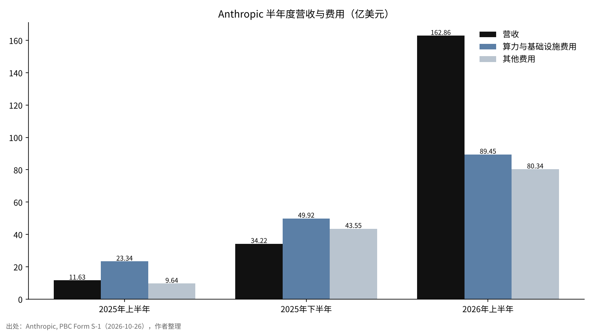
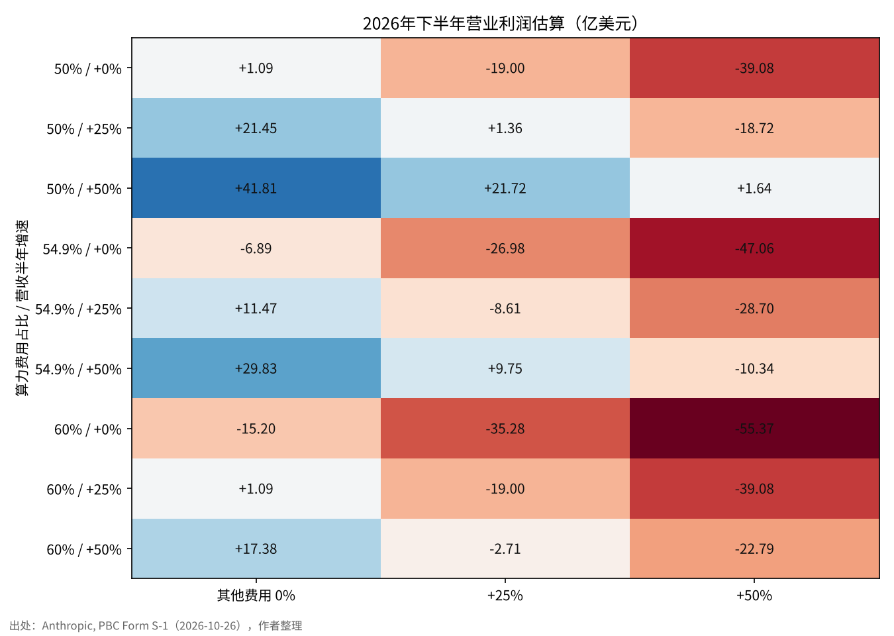

解读Anthropic的S-1——盈利何时可见，最重的成本是什么
2026年10月26日，Anthropic向美国证券交易委员会（SEC）公开提交了上市申请文件S-1表格（Form S-1）。上市地点为纳斯达克，股票代码拟为ANT。
2026年1至6月的营业收入为162.86亿美元，约为上年同期的14倍。另一方面，同一半年的净亏损高达807.48亿美元。
本文将问题集中为两个。这家公司的主营业务，可以推定何时实现盈利？此外，资金用在了哪里，最重的成本是什么？

问题与背景
S-1表格是指在美国首次公开发行股票时向SEC提交的注册登记文件。该文件以投资者能够据以判断的形式，披露业务内容、财务报表、风险因素和股权结构[2]。此次文件单是正文就约有13万字，是将6月提交的非公开草案（DRS）转为公开版本[1][3]。
Anthropic是依据特拉华州法律设立的公益公司（Public Benefit Corporation，PBC）。PBC是指要求董事在股东利益之外，兼顾章程所载公益目的与对利益相关方的考量的公司形态[6]。S-1将其公益目的表述为“为人类的长远利益，负责任地开发和维护先进AI”[1]。
上市文件是公司在承担法律责任的前提下，首次广泛公开自身数字的文件。比起新闻标题中的数字，我更希望依据文件本身的数字得出答案。本文所说的“盈利”，是指会计上的营业利润（营业收入减去营业费用后的金额）。净损益中大量混入可转换债券、衍生品等估值变动，因此不将其作为衡量主营业务盈亏的标尺[1]。
数据与方法
使用的数字仅限于S-1财务摘要表所列的三个期间，即2025年1至6月、2025年全年和2026年1至6月[1]。新闻报道和二手资料中流传的毛利率、客户集中度和合同总额，由于无法在S-1正文中核对，不纳入计算。
费用分为两类。一类是摘要表中单独列示的“计算资源与基础设施费用”，另一类是用营业收入减去营业损益求得营业费用合计，再从中扣除计算资源与基础设施费用后的“其他费用”。后者综合包含人工成本、研发、销售等。将2025年全年与半年数字并列时，用全年减去1至6月得出7至12月，以半年对半年进行比较。
盈利时点的测算方法是，以2026年1至6月为起点，推算下一个半年（7至12月）的营业损益。公式为“营业收入×（1−计算资源比率）−其他费用”，并将三个前提各按三种情形进行变动。
结果：收入增长，亏损收窄
| 期间 | 营业收入 | 计算资源与基础设施费用 | 其他费用 | 营业损益 | 营业利润率 |
|---|---|---|---|---|---|
| 2025年1至6月 | 11.63亿美元 | 23.34亿美元 | 9.64亿美元 | −21.35亿美元 | −183.6% |
| 2025年全年 | 45.85亿美元 | 73.26亿美元 | 53.19亿美元 | −80.60亿美元 | −175.8% |
| 2026年1至6月 | 162.86亿美元 | 89.45亿美元 | 80.34亿美元 | −6.93亿美元 | −4.3% |
营业收入从2025年1至6月的11.63亿美元增至2026年1至6月的162.86亿美元，约为14倍[1]。营业亏损从21.35亿美元收窄至6.93亿美元，营业利润率从负183.6%逼近至负4.3%。仅看2026年4至6月，文件称营业收入较上年同期增长1,368%[1]。
单独取出2025年7至12月来看，营业收入为34.22亿美元，计算资源与基础设施费用为49.92亿美元，营业亏损为59.25亿美元。计算资源费用高于营业收入的状态，一直持续到2025年下半年。
公司披露，2026年1至6月的调整后营业利润为盈利16.18亿美元[1]。由于其与会计上的营业损益衡量标准不同，本文主要使用会计数字。


结果：最重的成本是计算资源
在各项费用中，作为单独项目金额最大的是计算资源与基础设施费用。2026年1至6月为89.45亿美元，占营业费用合计169.79亿美元的52.7%。2025年全年为57.9%，2025年1至6月为70.8%。
以占营业收入的比率来看，变化更大。计算资源与基础设施费用在2025年1至6月为营业收入的200.7%，2025年全年为159.8%，到2026年1至6月已降至54.9%。这意味着，一家每获得1美元收入要耗费2美元计算资源的公司，如今用一半多一点就够了。
为什么计算资源如此沉重？已有研究表明，语言模型的性能会随着训练所用计算量、数据量和模型规模的增加，按幂律关系提升[4]。此外，研究还表明，在相同计算量下最优分配模型规模与数据量，可以用更低的费用达到相同性能[5]。越是处于前沿的公司，越需要不断追加计算量，费用向计算资源倾斜可以说是业务本身的性质。
S-1在风险因素中写道，公司能否保持在前沿（技术的最前端），在很大程度上取决于计算资源的确保[1]。也有报道称，计算资源合同中包括即使不使用也须付款的形式，但本文未将相关金额纳入计算。
结果：谁在付钱，手头还有多少
收入的来源正在扩展到大型企业客户。截至2026年9月30日的最近12个月，年付费10万美元以上的客户超过11,900家，100万美元以上的超过1,900家，1,000万美元以上的约250家[1]。关于客户集中度，文件称相当一部分收入和应收账款集中于有限的客户，但未给出比例数字[1]。
截至2026年6月30日，手头资金为现金与短期投资合计1,316.5亿美元[1]。与2026年1至6月6.93亿美元的营业亏损相比，从这半年的数字看不出因主营业务亏损而导致资金耗尽的担忧。我认为，在资金用途中，确保计算资源比弥补亏损分量更重。
公司的控制结构也不同于一般的上市公司。Long-Term Benefit Trust通过其持有的1股T类股选出董事会过半数成员，创始人一方的1股F类股在一般议案中拥有50.1%的表决权[1]。上市后买入股票的投资者，将以对经营方向没有很强影响力为前提持股。
敏感性分析
以三个前提对2026年7至12月的营业损益进行了变动测算。分别是营业收入的半年增长率（0%、25%、50%）、其他费用的增长率（0%、25%、50%）以及计算资源比率（50%、54.9%、60%）。
| 计算资源比率 | 收入增长 | 其他费用0% | 其他费用+25% | 其他费用+50% |
|---|---|---|---|---|
| 50% | 0% | +1.09亿美元 | −19.00亿美元 | −39.08亿美元 |
| 50% | +25% | +21.45亿美元 | +1.36亿美元 | −18.72亿美元 |
| 50% | +50% | +41.80亿美元 | +21.72亿美元 | +1.64亿美元 |
| 54.9% | 0% | −6.89亿美元 | −26.98亿美元 | −47.06亿美元 |
| 54.9% | +25% | +11.47亿美元 | −8.61亿美元 | −28.70亿美元 |
| 54.9% | +50% | +29.83亿美元 | +9.75亿美元 | −10.34亿美元 |
| 60% | 0% | −15.20亿美元 | −35.28亿美元 | −55.37亿美元 |
| 60% | +25% | +1.09亿美元 | −19.00亿美元 | −39.08亿美元 |
| 60% | +50% | +17.38亿美元 | −2.71亿美元 | −22.79亿美元 |
在27种情形中，实现营业盈利的有11种。若将计算资源比率设定为与1至6月相同的54.9%，且其他费用不增加，则营业收入半年增长9.4%（至178.23亿美元）时，营业损益即可达到零。
另一方面，如果其他费用与营业收入以相同速度增长，则要等到计算资源比率降至50%，才能实现盈利。由此可以解读为，决定盈利时点的，比起营业收入增长的幅度，更在于收入与费用增长之间的差距。

讨论
也存在相反的看法。计算资源比率降至54.9%，或许不过是费用确认未能跟上收入的急增。一旦开始训练新模型，比率可能再次大幅上升。2025年下半年该比率曾达145.9%，这一事实表明了波动幅度之大。
数据的局限也很大。S-1的摘要表为半年数字，2026年7至9月的营业收入仍为空白[1]。其他费用的明细（人工成本、股权激励、诉讼和解金等）无法从摘要表中拆分出来。据报道，公司在2025年计提了15亿美元的版权诉讼和解金[8]。
与手头的1,316.5亿美元相比，即使营业亏损在半年内回到数十亿美元，从资金层面看也不至于很快陷入困境。问题不在于资金的多少，而在于计算资源合同将多远之后的付款固定下来，其总额需要在S-1正文中确认。
检验的标准有两个。一是在上市前提交的S-1修订版或上市后的首份财报中，2026年7至12月营业损益的正负。二是计算资源比率是停留在50%区间，还是再次上升。
结论
就S-1的数字而言，Anthropic的主营业务在2026年1至6月时点，营业利润率已达负4.3%。如果计算资源比率维持在目前水平，在控制其他费用的同时营业收入半年增长一成左右，按计算最早在2026年下半年即可实现营业盈利。
最重的成本是计算资源，占营业费用的一半多一点。807亿美元净亏损的大部分是没有现金流出的估值损失，需要与主营业务的盈亏分开解读[1][7]。如果修订版文件或首份财报中的数字发生变化，这一推算也会随之改变。
我的看法
我已经决定，Anthropic上市后，买入约42.6万元人民币（约6.34万美元）的股票。上市后，我打算持有10年到20年。此次的S-1并没有成为改变这一想法的材料。
我最想知道的，是何时实现盈利，以及钱用在了哪里。答案是，一半以上的资金用于计算资源，主营业务已来到盈利的前一步。明天，我会向野村证券询问是否有IPO股票的配售，如果没有，就在上市当天从市场买入。
出处
- Anthropic, PBC《Form S-1 Registration Statement》SEC EDGAR，2026-10-26 https://www.sec.gov/Archives/edgar/data/2130357/000162828026067168/anthropicpbc-sx1.htm
- SEC《Form S-1 General Instructions》 https://www.sec.gov/files/forms-1.pdf
- Anthropic新闻室（s1-sec）2026-10-26 https://www.anthropic.com/news/s1-sec
- Kaplan, J. et al.《Scaling Laws for Neural Language Models》arXiv:2001.08361, 2020 https://arxiv.org/abs/2001.08361
- Hoffmann, J. et al.《Training Compute-Optimal Large Language Models》arXiv:2203.15556, 2022 https://arxiv.org/abs/2203.15556
- Delaware Code Title 8, Chapter 1, Subchapter XV《Public Benefit Corporations》 https://delcode.delaware.gov/title8/c001/sc15/
- 路透社（《新闻周刊》日本版）《Anthropic公开美国IPO申请文件，巨额亏损但营业收入急速扩大》2026-10-26 https://www.newsweekjapan.jp/articles/-/338062
- TheWrap《Anthropic Reveals $80.7 Billion Loss, $16.3 Billion in Revenue in IPO Filing》2026-10-26 https://www.thewrap.com/industry-news/tech/anthropic-ipo-filing-80-billion-loss-revenue/
照片：İsmail Enes Ayhan、Taylor Vick（Unsplash）。图表由YUKI CAPITAL制作
每天的数字和判断，我都记录在X上。